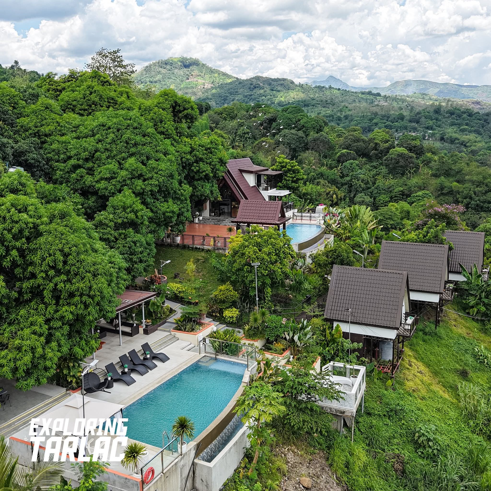
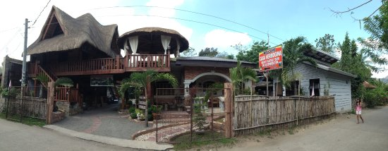
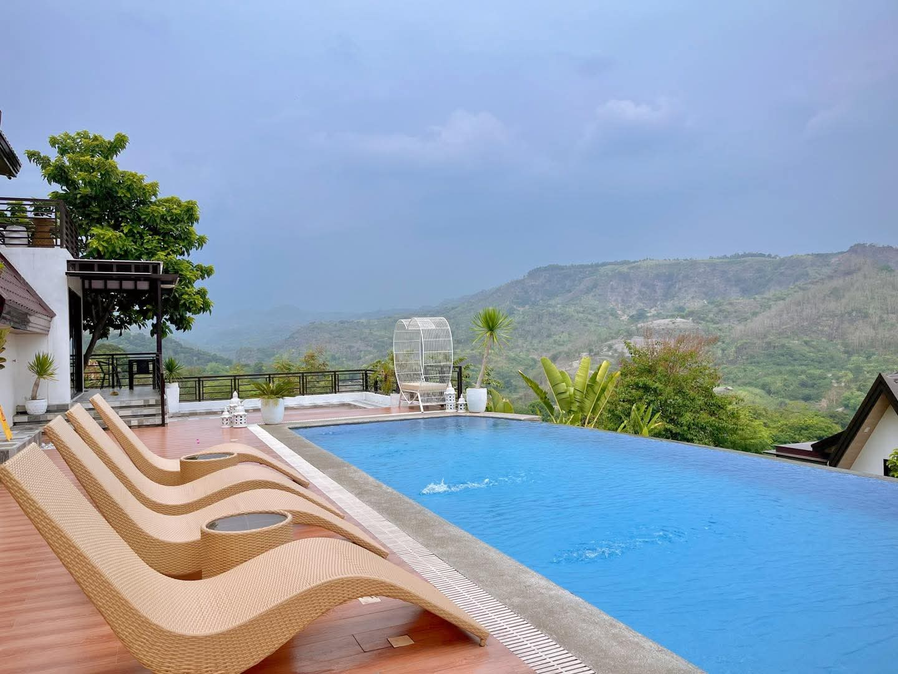
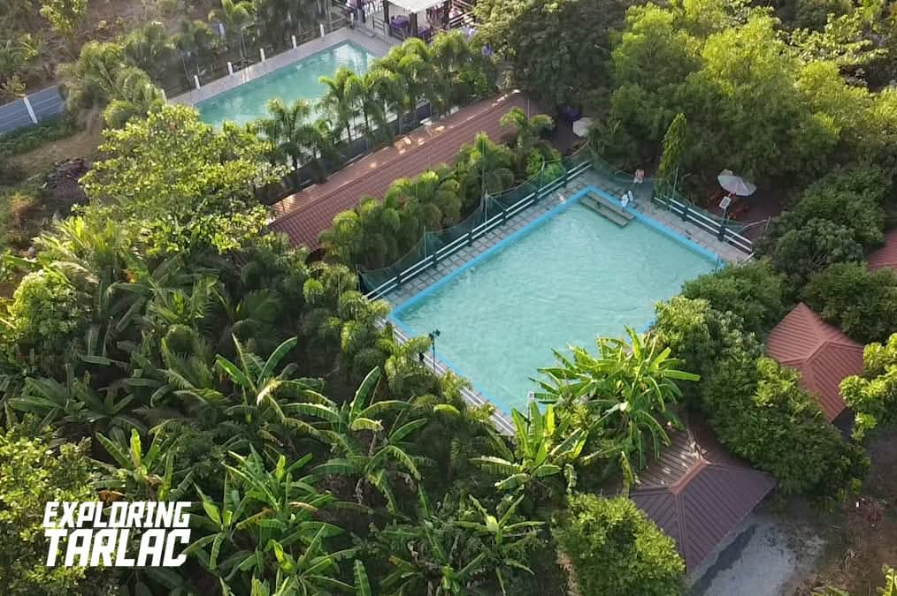

Lodges
Lodges in Tarlac offer a rustic, nature-close experience that sits between a resort and a guesthouse. They are typically found near trekking routes, rural barangays, and countryside areas, and they attract travelers who want to wake up to open fields, river sounds, or mountain air rather than a city street.
Featured Lodges
-

Sta. Juliana Lodge -

Bamban Countryside Lodge -

La Paz Mountain Lodge
About These Lodges
- Sta. Juliana Lodge: The primary overnight option for Mt. Pinatubo trekkers, located in the official jump-off barangay in Capas. Simple fan rooms, experienced staff familiar with trek logistics, packed breakfast service, and 4x4 vehicle coordination make this lodge an essential part of the Pinatubo experience.
- Bamban Countryside Lodge: A family-owned lodge along the Bamban River surrounded by rice fields. Guests enjoy home-cooked Kapampangan meals, bicycle rentals, and quiet walks through farmland. A genuine taste of rural Tarlac life.
- La Paz Mountain Lodge: Elevated terrain with cooler temperatures and views over the plains. Frequently used by pilgrims visiting the Shrine of Apo Nmat and birdwatchers exploring the La Paz wetlands. Simple rooms, communal dining, and a peaceful garden terrace.
Best Activities Near These Lodges
- Mt. Pinatubo Trekking: Staying at Sta. Juliana Lodge puts you minutes from the trek registration point. An early 4x4 departure across the lahar river crossing leads to a 2–3 hour hike up to the crater lake — one of the most rewarding day hikes in the Philippines.
- Riverside Cycling & Farm Walks: Bamban Countryside Lodge offers bicycle rentals for guests to explore the surrounding rice paddies and river paths at their own pace — a calming contrast to city life.
- Pilgrimage & Birdwatching: La Paz Mountain Lodge is walking distance from the Shrine of Apo Nmat and close to wetland areas that attract migratory birds, making it ideal for both spiritual retreats and nature observation.
Practical Information
- What to Bring: Lodges typically provide basic bedding and towels but may not stock toiletries. Bring your own personal care items, a flashlight for power outages in rural areas, and insect repellent.
- Meals: Most lodges offer simple home-cooked meals as part of their package or at low additional cost. Inform the host of any dietary restrictions when booking so they can prepare accordingly.
- Connectivity: Wi-Fi availability varies. Sta. Juliana Lodge has limited signal due to its remote location. Bring a mobile data SIM if staying connectivity matters to you.